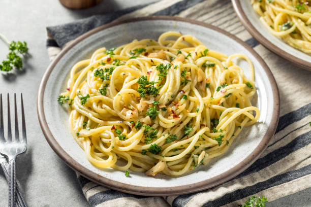

Home
Spaghetti Aglio e Olio

Description
A classic, light yet filling way of enjoying pasta
Ingredients
- ½ pound uncooked spaghetti
- ¼ cup olive oil
- 3 cloves garlic, thinly sliced
- ⅛ teaspoon red pepper flakes, or to taste
- salt and freshly ground black pepper to taste
- ⅛ cup chopped fresh Italian parsley
- ½ cup finely grated Parmigiano-Reggiano cheese
Steps
- Gather all ingredients.
- Bring a large pot of lightly salted water to a boil. Cook spaghetti in the boiling water, stirring occasionally until cooked through but firm to the bite, about 10 to 12 minutes. Drain and transfer to a pasta bowl.
- While the pasta is cooking, combine olive oil and garlic in a cold skillet.
- Cook over medium heat to slowly toast garlic, about 10 minutes. Reduce heat to medium-low when olive oil begins to bubble. Cook and stir until garlic is golden brown, about another 5 minutes. Remove from heat.
- Stir red pepper flakes, salt, and black pepper into pasta.
- Pour in hot olive oil and garlic, and sprinkle on Italian parsley and half of the Parmigiano-Reggiano cheese; toss until combined.
- Serve pasta topped with the remaining Parmigiano-Reggiano cheese.